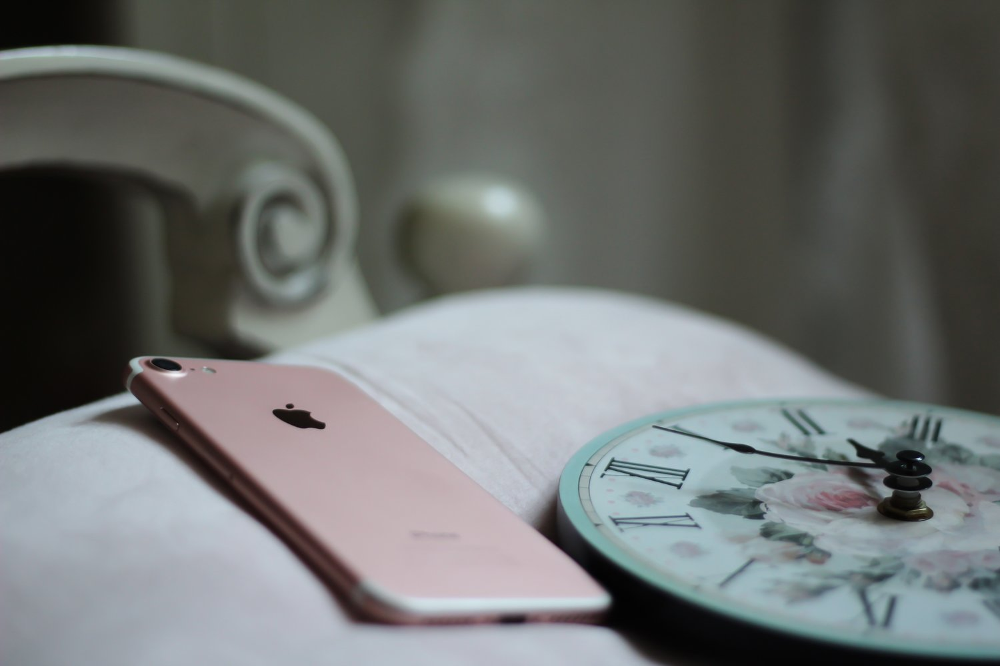
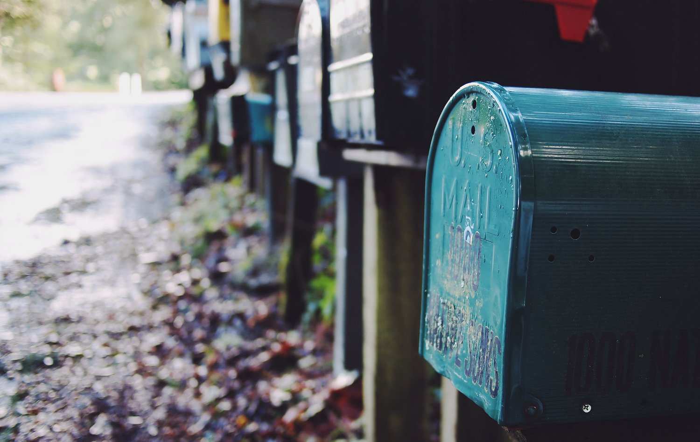

Life, Liberty, and the Pursuit of Habitness
Okay, peeps. I promised myself that I would not dedicate any more posts to Harry Potter after the last one, because of social norms. But he might make a cameo at some point in the near future. WHO KNOWS. For now I’ll just tell you that I may have chased down a random employee at Universal who I *thought* was dressed as Harry (so that my little cousin could take a pic with him), but it turned out to be just a dude who works there with glasses.
We still took the photo.
Of course, just because I’m not going to keep spewing Harry analogies, doesn’t mean I’m not going to do something equally nerdy. In fact, I have to tell you about something extremely important that my sisters make fun of me for incessantly: podcasts. Or rather, one specific podcast.
In my recent pursuit of rest, I looked up a few that I thought would help me be more present and peaceful. There are some great ones that I can share via email or text, but my favorite by far has been a sermon series by John Mark Comer called Practicing the Way. The series is about living life with patience, peace, and simplicity. It surfaces a lot of stuff, but one thing stands out very clearly in my mind. John Mark suggests taking a self-inventory, and listing out your daily habits. What do you do every morning when you wake up? While driving to work? What do you do as soon as you get home, or when you’re stressed?
They heart of the question is this: What are our daily and weekly rhythms, and what do these rhythms do to our hearts? What do they do to our loves and longings and desires? How are they transforming us?
As I thought about this question, several things came to mind. I’ll explain a couple of them in case it helps you think of your own habits (but I’ll try to leave out the more awkward ones).
In the morning, I almost always wake up later than I want to. I tend to turn off my alarm and scroll through social media and blogs, looking at pictures or articles until I absolutely have to get out of bed. Sometimes these articles and posts are inspiring or helpful, but a lot of the time they’re just completely pointless (for example, “How to Attract More Butterflies to Your Garden” – I DON’T EVEN HAVE A GARDEN). After that, I usually rush to make my morning conference call, while brewing coffee or doing my hair. Sometimes I skip the hair altogether in favor of toast. I’m slowly starting to change this routine to allow for more quiet time in the mornings…but let’s just say that my default setting is: Night Owl.
This one simple bad habit is terrible for me. For one thing, the general morning chaos causes me to start my day off feeling a bit scattered and distracted. I jump into my schedule feeling like everyone is ahead of me and I have to struggle to catch up. The feeling lingers throughout the day, the anxiety building until I explode because I forgot one of my passwords or misplaced my running shoes (which actually did happen, so if anyone sees my shoes PLEASE TELL ME).
So, if we’re keeping track: so far, my habits make me anxious and distracted. Fun, right?!
The other one that popped out at me is my tendency to pull up my to-do list automatically whenever I open my laptop. First of all, I spend a LOT of time on my laptop. It has become an appendage of sorts. Second, when I constantly look at my to-do list (which, coincidentally, is never complete), I subconsciously begin to feel like there’s never any time to rest. There is ALWAYS something on the list, so how could I possibly take a break? The minute I delete something, a new task magically appears (but actually, I put it there myself because I’m insane). Instead of opening my laptop and the list of death automatically, maybe I can just chill out for a second. Maybe I can take a few minutes to pray, read, call a friend, or just sit still before springing into action. Maybe it’s okay to just breathe.
Will this make much of a difference? I still have to do most of the things on the list. I can’t just drop my responsibilities on a whim and sit in the jacuzzi. But maybe that moment of reflection will remind me that my to-do list doesn’t define me. Maybe it’ll remind me that people and conversations and intimacy and presence are far more important than productivity. And if that moment is only a reminder of what’s important, and nothing more – I still think it’s a moment worth taking.
I’m realizing more and more every day that our habits make us who we are. We so often think it’s the large accomplishments and the epic moments: the awards, the accolades, the speeches, the weddings. We focus on the moments that make it into movies – when really, the in-between stuff is just as beautiful. It’s often mundane and lonely and quiet – but who’s to say that it’s not sacred? Our daily rhythms do things to our hearts over time, and that alone is enough to make me believe that they are valuable.
What I do right when I wake up matters. It’s important because it contributes to who I am, for better or for worse – and if I have a choice in the matter, it’s probably a good idea to go with “better.”
Unless, of course, a new season of Master of None has been released – in which case all of this goes out the window.